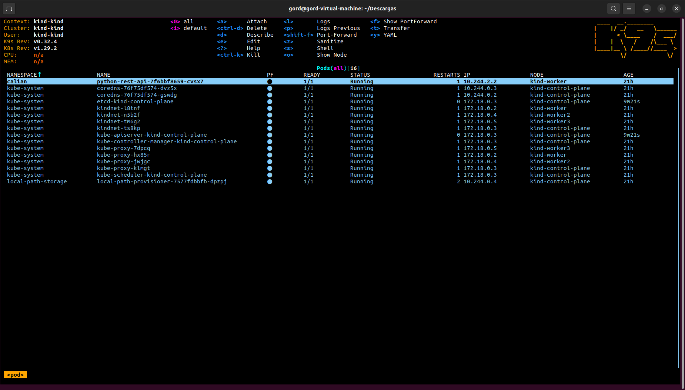

| Kubernetes Training Course (Summer 2024) |
|---|
Training DescriptionThis was an internal training course organized and directed by a team member at Calian Advanced Technologies. The course was delivered over approximately 10 weeks with session per week lasting 1-2 hours per session. These sessions were interactive follow along lessons where the group work through deploying a python rest api application with a redis datastore to various Kubernetes cluster configurations. For this training we ran Kubernetes in a local cluster using 'kind', and I personally ran it on a Ubuntu VM on my personal laptop at home. There was also an accompanying training course put on by Calian the year before on the subject of docker. I did not attend the docker training but was able to look over the notes for the docker course on my own. During this training course we learned about various resources types such as:
We also learned about tools like k9s for managing the system, and helm charts for publishing our kubernetes configurations and reusing previous published configurations. The Example ApplicationIn this image of the k9s command line interface, you can see a list of pods, with the first one being the "python-rest-api" pod. This was the main application we were deploying during this training. It was a small example application that had a few rest endpoints which we were able to access with a web browser once everything was setup correctly. This application was a good example, because as we went along deploying it we needed to include different resources types. For example, to make the application accessible outside of the cluster, we needed to use either port-fortwarding or a service resource type. Then once we were able to access the application port from outside the kind cluster, we started to add in the redis datastore to support the "/get" and "/put" endpoints. To do this we needed volumne mounts to setup a disk on which the redis datastore could run. Finally, once the disk was setup, we downloaded a helm chart with a starting redis configuration that we could override with the relevant configuration to get our app working. We also learned about adding config maps to provide a configuration file to the application. Screenshots |